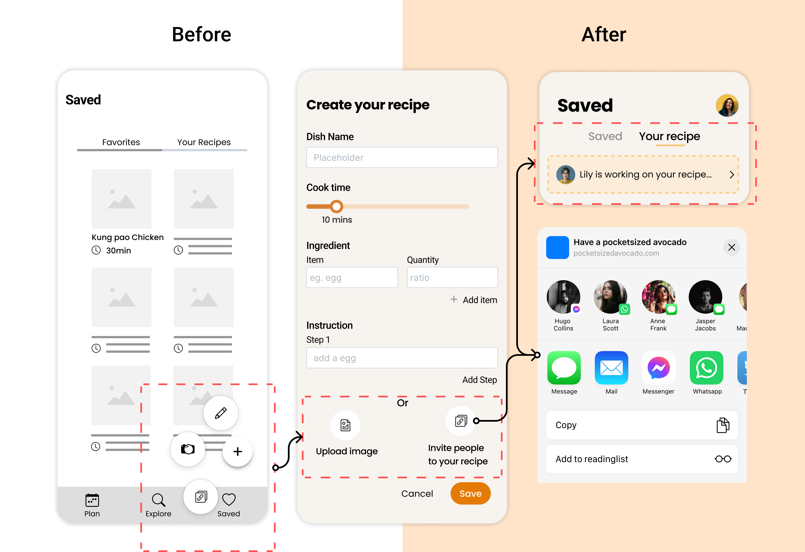

User Testing
To evaluate the usability of our app, our team conducted 5 user tests with some of our wireframes and
initial designs with participants. We summarized our main findings below.
Problem 1: 5/5 users had a hard time finding the "upload recipe" button. While we were
conducting user testing, almost all of our participants mentioned they would like to see this
button in an evident place that can attract their attention.
Problem 2: No clear feedbacks on actions. 5/5 users mentioned that they were not sure if the
recipe was added to the meal plan/favorite list successfully. Occasionally we observed that
users would switch to certain pages to confirm recipes were successfully added.
Problem 3: Users prefer to browse the recipes first and add it to meal plan. We found that our
users meal planned one week ahead max.
Iteration
In order to address the issues uncovered above, we revised our final sketches as such
Iteration 1
I changed "Find a recipe" to "Add recipes" because generally people are more familiar with the
word “add” and it’s more consistent with user flow that they actually choose recipes from their
saved list.
Even though the scrollable calendar on the top enabled users to pick between day of the week and
date, we thought that 7 tabs on the top navigation would be crowded on smaller devices. We've
also noticed that most users only remember the day of the week rather than the precise date. As
a result, we replaced it with a weekday tab on the left with a larger clickable area and a short
statement to inform users of the month's week.
we also change the meal plan to second tab since user said they want to explore different recipe
when they landing on app rather than seeing empty meal plan.
Iteration 2
In order to address the lack of feedback，we propose to give confirmation messages in the form of
pop-up windows to inform users that activities have been completed successfully,. The message
"You've successfully uploaded a recipe" will appear in the popup window.
Iteration 3
Users takes more than 1 mins in average, in finding how to create their own recipe and invite
their friends to edit together and they mentioned that the pop-up buttons are so confused that
they barely understand the meaning. Therefore, we integrate the upload image and friend
invitation to one page, users would be able to create their recipe in simple steps.
